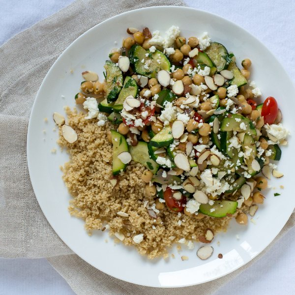

Chickpea & Zucchini Sauté with Couscous, Feta & Almonds

Total Time
40 min
Nutrition (Per Serving)
582.9 kcalCalories
26.3 gProtein
80.1 gCarbs
21.2 gFat
Full nutrition table
| Calories | 582.9 kcal |
| Total fat | 21.2 g |
| Saturated fat | 6.1 g |
| Trans fat | 0.3 g |
| Cholesterol | 25.1 mg |
| Sodium | 600.5 mg |
| Carbohydrates | 80.1 g |
| Fiber | 18.1 g |
| Sugars | 10.2 g |
| Protein | 26.3 g |
| Potassium | 1280.2 mg |
| Calcium | 299.9 mg |
| Iron | 5.1 mg |
| Vitamin A | 1133.5 IU |
| Vitamin C | 67.9 mg |
| Vitamin D | 4.5 IU |
Cookware
Ingredients
- ¼ cupalmonds, sliced
- 16 fl ozchicken or vegetable broth
- 1 (4 oz) pkgcrumbled feta cheese
- 2 (15 oz) cansgarbanzo beans (chickpeas)
- 4 clovesgarlic
- 1 pintgrape tomatoes
- 1 small bunchItalian (flat-leaf) parsley
- 1 mediumred onion
- 1 cupwhole wheat couscous
- 4 mediumzucchini squash
- black pepper
- cumin, ground
- extra virgin olive oil
- salt
Steps
- Wash and dry the fresh produce.1 pint grape tomatoes
4 medium zucchini squash
1 small bunch Italian (flat-leaf) parsley - Trim off and discard the ends of the zucchini; halve the zucchini lengthwise, then cut the halves crosswise into ¼-inch-thick half-rounds at a 45° angle. Transfer to a medium bowl.
- Halve the grape tomatoes; transfer to a small bowl.
- Trim off and discard the root ends of the garlic; peel and mince or press the garlic. Transfer to a small bowl.4 cloves garlic
- Preheat a skillet over medium heat.
- While the skillet heats up, trim off and discard the ends of the onion and remove the outer layer; medium dice the onion (cut into ½-inch pieces).1 medium red onion
- Once the skillet is heated, add olive oil and swirl to coat the bottom.2 tbsp extra virgin olive oil
- Add the onion to the skillet; cook, stirring occasionally, until it has softened, 3 to 5 minutes.
- While the onion cooks, using a knife, shave the parsley leaves off the stems at a downward angle, working away from your body; discard the stems and roughly chop the leaves.
- Add the broth to a small saucepan; bring to a boil over high heat.12 fl oz (1 ½ cups) chicken or vegetable broth
- Add the garlic and cumin to the skillet and stir until fragrant, 15 to 30 seconds.1 tsp cumin
- Add the zucchini and broth to the skillet; season with salt and pepper. Cook, stirring occasionally, until the zucchini is tender, 6 to 8 minutes.4 fl oz (½ cup) chicken or vegetable broth
½ tsp salt
½ tsp black pepper - Once the liquid in the saucepan comes to a boil, add couscous and salt; give it a stir and cover with a lid. Remove from the heat and let it stand for 5 minutes.1 cup whole wheat couscous
½ tsp salt - Drain and rinse the chickpeas in a colander.2 (15 oz) cans garbanzo beans (chickpeas)
- Measure out the feta into a small bowl.1 (4 oz) pkg crumbled feta cheese
- Measure out the almonds into a small bowl.¼ cup almonds, sliced
- Add the chickpeas, tomatoes, and parsley to the zucchini. Stir and cook until the mixture is heated through, 1 to 2 minutes.
- Uncover the couscous and fluff with a fork.
- To serve, place the couscous into a bowl or on a plate, top with the zucchini and chickpea sauté, and sprinkle with the crumbled feta and almonds. Enjoy!